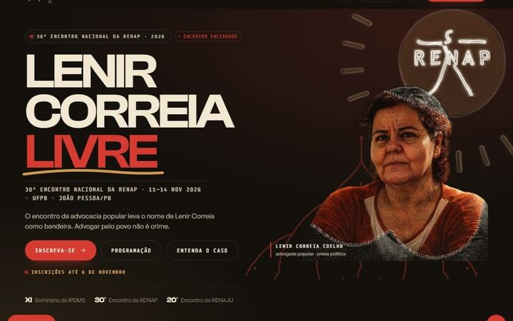
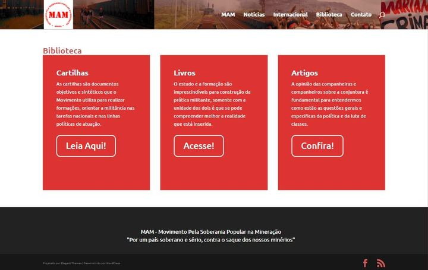
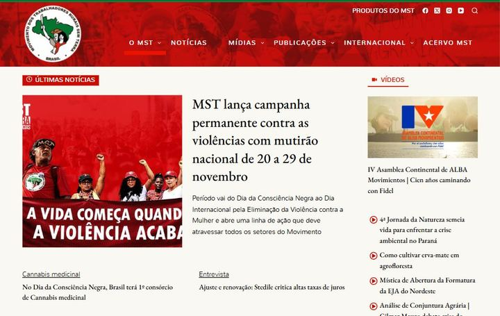
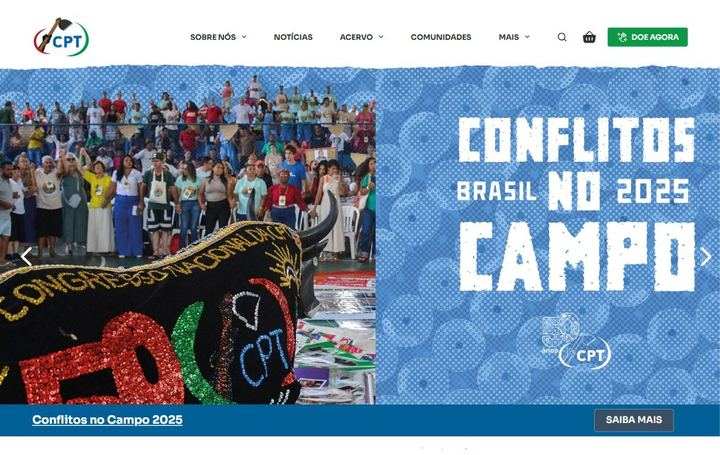
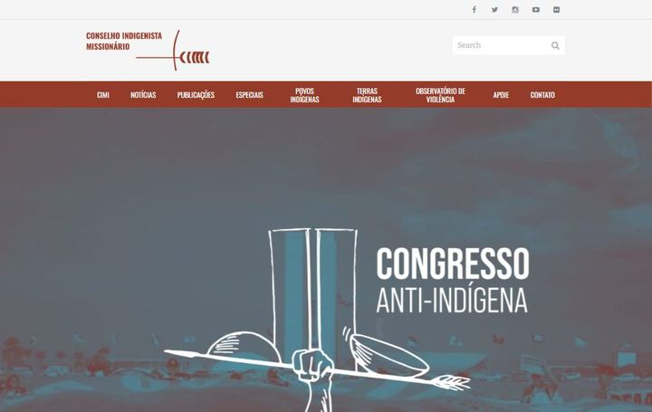
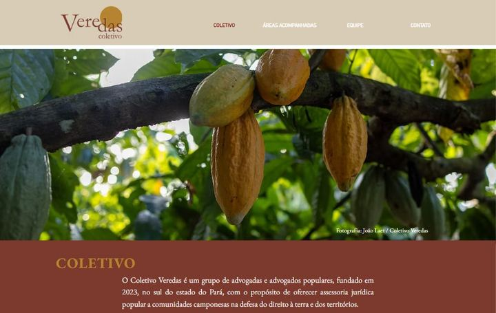
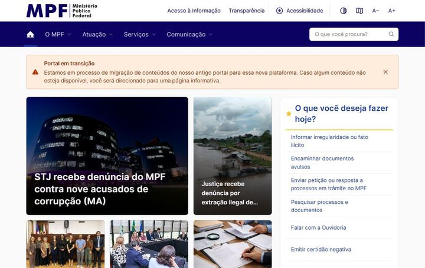
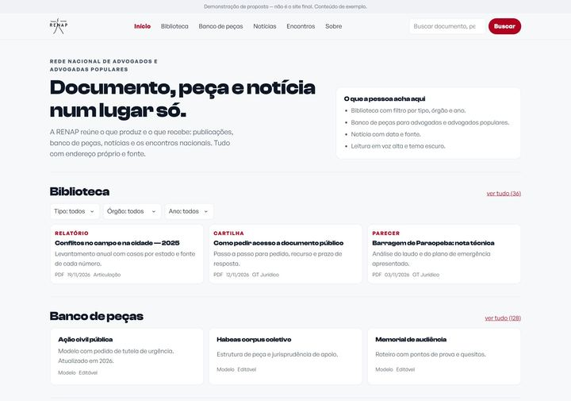

Articulação Nacional · 19 de novembro de 2026
Novo site da RENAP
Uma proposta em linguagem simples. Cinco minutos.
Proposta do GT de Comunicação da RENAP
Use as setas, clique no lado direito ou deslize o dedo.
Decisões desta reunião
Quatro decisões da reunião
A RENAP (Rede Nacional de Advogados e Advogadas Populares) escolhe uma opção em cada linha. As quatro respostas definem preço, prazo e prioridade.
O que a pessoa precisa encontrar primeiro?
- Opção A: A pessoa encontra o documento em dois cliques.
- Opção B: A pessoa encontra a notícia do dia.
Exemplo: Quem recebe um link no WhatsApp procura o PDF (documento digital), não a capa do site.
Quem publica conteúdo no dia a dia?
- Opção A: Uma pessoa da Articulação Nacional ou do GT Comunicação publica.
- Opção B: Todo integrante aprovado pode publicar, na biblioteca ou no blog, por exemplo.
Exemplo: Hoje, a notícia depende de uma pessoa que tem a senha do Wix (plataforma de sites).
Quem pode descobrir que um documento restrito existe?
- Opção A: Só quem tem permissão vê o título e o arquivo.
- Opção B: Ninguém vê o título; o administrador envia o link direto.
Exemplo: O administrador envia o laudo (parecer técnico) do GT (Grupo de Trabalho) jurídico só para quem tem permissão.
O site precisa funcionar em internet lenta?
- Opção A: O site funciona com foto reduzida, página leve e sem vídeo.
- Opção B: Não. O site pode pesar e demorar para abrir.
Exemplo: A liderança em área rural perde tempo quando o site pesa no 3G (internet móvel).
Cada resposta vira requisito do plano de trabalho. Sem elas, a proposta não define entregas.
Referências · 1 de 2
Referências: acervo e serviço
Oito páginas: três inspirações, três acervos e dois órgãos públicos.







O que olhar: como cada um organiza documento, busca e capa.
Referências · 2 de 2
Referências: movimentos e organizações
Sete páginas de movimento popular e de jurídico.







O que olhar: menu, funções e cores de cada um.
O que os 12 portais ensinam
O que os 12 portais têm em comum
- Capa com uma manchete e foto forte.
- Acervo com nome próprio: biblioteca, banco de peças.
- Menu entre 4 e 12 itens, sem submenu profundo.
- Campanha no topo, com data visível.
- Contato e quem assina, à vista.
- Busca com filtro por tipo, órgão e data.
- Leitura em voz.
- Tema escuro e alto contraste.
- Glossário para leigo.
- Endereço antigo que continua abrindo.
Ou seja: copiar a capa é fácil. A diferença está no acervo.
A decisão de estilo
Decisão de estilo: sóbrio ou com efeitos
Limpo e fácil de achar
Texto grande, contraste medido, pouca animação. Abre rápido no 3G.
Requintado e com efeito
Fundo em movimento, 3D, som. Bonito na vitrine, pesado na leitura.
- Efeito só na capa e em campanha. Nunca na página de documento.
- Quem usa leitor de tela ou celular fraco não pode perder nada.
- Movimento é escolha: existe botão de parar.
Não é 8 ou 80: o mesmo site pode ter as duas camadas.
O que já vem pronto
Ferramentas gratuitas e fáceis de integrar
Fonte e ícone
Clash Display e General Sans (Fontshare), Lucide (ISC). Zero custo.
Sanfona e tema
<details> nativo e tema por CSS. Já estão nesta apresentação.
Busca
Meilisearch (MIT): busca em PDF e tolera acento.
Leitura em voz
Web Speech do navegador (grátis) e Piper (MIT) para uso sem internet.
Peso de imagem
Converter foto para WebP corta 60% do tamanho, sem programa novo.
Cópia de segurança
Script e agendador do próprio servidor (MIT). Testar restauração uma vez por mês.
Esforço: cada item acima é uma tarefa, não um projeto. Dá para entrar na fase 2.
O que queremos
O que o site reúne
Num lugar só: documentos públicos, banco de peças, notícias, fotos, vídeos e áudios. E uma área de administração para a Articulação.
- Documentos
- Peças
- Notícias
- Fotos
- Vídeos
- Áudios
Quanto temos para começar
R$ 3.440,00
Verba do projeto Fundo Casa. A primeira entrega cabe nesse valor.
Entra agora
O site novo, a migração e o conteúdo.
Fica para depois
O que não couber vira fase 2, com preço separado.
Depois da entrega: hospedagem e domínio passam a ser custo da RENAP. Números no anexo E.
Fase 1 · o que entra
Fase 1: seis entregas
- Site público com cara nova: início, contato, publicações e encontro.
- Migração das 36 publicações, 6 categorias e 6 páginas.
- Notícias, fotos e arquivos: PDF, áudio e vídeo curto.
- Documentos públicos com busca, filtro, data e endereço.
- Cadastro aberto, com aprovação do administrador.
- Temas de cor e linguagem simples com glossário.
Migração
Migração do site antigo
36
publicações
6
categorias
6
páginas
0
link quebrado
Como se confere: todo endereço antigo abre ou redireciona. Nada dá 404.
Documentos, notícias e arquivos
Documentos: busca, filtro e fonte
- Busca, filtro e data em cada documento.
- A fonte aparece junto do arquivo.
- A equipe publica sozinha, sem programador.
- Foto, PDF, áudio e vídeo curto, em versão leve.
Como se confere: digitei “Paraopeba” e achei o documento com a fonte.
Cadastro e administração
Cadastro e administração
- A pessoa se cadastra sozinha.
- Só entra quem o administrador aprova.
- Administrador é pessoa física, indicada pela RENAP.
- Todo administrador entra com senha e código.
Proteção: um administrador pode promover outro, com confirmação e registro.
Cores e identidade
Cores e temas: qual identidade a RENAP quer
A mesma página muda de cor sem mudar de conteúdo. Toque num tema e veja aqui.
Título em Clash Display
Corpo em General Sans, 1,5 de entrelinha.
Tema em uso: Claro
Identidade Brasil
Verde e amarelo. Combina com o nome e o público, mas pesa em texto longo.
Biomas
Pequi, Cerrado, Mata Atlântica, Caatinga e Pantanal. A cor acompanha o território.
Institucional
Claro, escuro e alto contraste. A leitura vem antes da identidade visual.
Decisão: escolher uma família agora e as outras duas ficam disponíveis para o leitor.
Tipografia
Fontes: como escolher a letra
Toque num nome para ver o título desta página mudar. As gratuitas vêm do Fontshare.
Fontshare · grátis
Brasileiras · licença paga (Plau, do Rio)
RENAP — o povo escreve a sua história
Mesma frase, letra escolhida.
Xilogravura: não achei família livre com licença clara hoje. O caminho honesto é licenciar uma brasileira ou encomendar letreiro. Nada aqui foi usado sem licença.
Sigilo · fase 2
Sigilo: quatro níveis de acesso
Qualquer pessoa vê, sem entrar.
Só pessoa logada e aprovada.
Só o grupo indicado. Exemplo: Articulação Nacional.
Só o administrador e quem ele autorizar.
O administrador classifica cada documento e pode mudar depois.
Fase 2 · se couber
Funções possíveis na fase 2
São funções extras, que entram depois se couber no orçamento. Cada uma vem com preço e prazo à parte.
Cada linha traz a função e um exemplo. Item sem resposta é tratado como “não faz”.
Conexão para publicar · API
Chave de edição do site com níveis de acesso (API)
API é a porta entre dois programas: o site e outro programa, como ChatGPT ou Claude.
Chave geral
Abre a casa inteira: cria, edita e apaga qualquer publicação.
Chave de notícias
Abre uma gaveta só: mexe em notícia e em mais nada.
- Cada vez que uma chave é usada, fica registrado: quem, quando e o quê.
- Qualquer chave pode ser cancelada a qualquer momento.
- A chave geral fica com a RENAP. O fornecedor usa só na entrega.
Cuidado com quem lê e com quem administra
Proteções: cópia, registro e busca
Cópia diária
Com restauração testada. Sem isso, um erro apaga história.
Restrito fora da busca
Não aparece no Google nem na busca do site.
Registro de acesso
Quem viu e quem baixou. Permite responder a um vazamento.
Sem rastreamento
Sem autoplay na área restrita. A audiência só é medida no público.
Três caminhos para a mesma informação
Acessibilidade comunicacional
Para quem não enxerga, para quem tem dificuldade de ler e para quem prefere perguntar.
- Leitura em voz alta: o navegador lê a página em português. A pessoa aperta “ouvir” e acompanha o texto. Não custa nada.
- Sem internet: existe leitor de código aberto (Piper) que faz o mesmo no computador da sede.
- Robô de conversa (chatbot): a pessoa pergunta com as próprias palavras e recebe a resposta com o link da fonte.
- Imagem e vídeo: toda foto tem descrição escrita; todo vídeo tem legenda.
- Limite do robô: não acessa documento restrito nem dado de pessoa. Se não souber, diz que não sabe e passa para o atendimento humano.
Quer ver o robô e o rádio funcionando? Anexo C.
O que precisamos decidir
Cinco decisões para o começo
Orçamento
O que entra nos R$ 3.440 e o que fica para a fase 2.
Prazo
Data de cada entrega.
Aprovação
Uma pessoa responde pelo projeto.
Sigilo
Exemplos de público, interno, restrito e sigiloso.
Conteúdo
Textos, fotos, PDFs e direito de uso.
Se der para responder só cinco: orçamento, prazo, aprovação, sigilo e conteúdo.
Glossário da reunião
Glossário da reunião
API
Porta de um programa para outro.
Chave de acesso
Como uma senha de máquina.
Dois passos
Senha mais um código do celular.
Sigilo
Quem pode ver cada documento.
Endereço antigo (301)
Aponta para o novo, para sempre.
Código aberto
Programa que podemos manter sem licença.
Próximo passo
Próximos passos
Com as respostas, a proposta vira plano de trabalho: o que entra, quando fica pronto e quanto custa.
GT de Comunicação da RENAP
Ver o código no GitHub Código aberto (MIT). Os textos são da RENAP.
Anexos: A efeitos · B sanfona · C busca, robô e rádio · D hospedagem. Versão do briefing: 19/11/2026.
Anexo A · efeitos
Anexo A: efeitos visuais
Passe o mouse e toque. Nada aqui carrega informação sozinho.
Sombra e brilho
Sobe 2 px no mouse; o brilho segue o ponteiro.
Pulso
Anel que respira. Chama o clique sem piscar.
Ímã
O botão se aproxima do ponteiro. No dedo, não se move.
Contador
O número sobe quando aparece na tela. O valor final está no HTML.
R$ 3.440
Regra: tudo para em prefers-reduced-motion e nada é o único sinal de estado.
Anexo B · sanfona
Anexo B: sanfona
A linha inteira é o alvo. A seta gira e o texto diz “Abrir”.
O que é sigilo de documento? Abrir Fechar
Como funciona a chave de publicação? Abrir Fechar
E se o site sair do fornecedor? Abrir Fechar
Componente do design system do Controle Popular, com os tokens da RENAP.
Anexo C · busca, robô e rádio
Anexo C: busca, robô e rádio
Busca
Digite “mineração” ou “encontro”.
- Relatório da barragem de Paraopeba PDF
- Chamada do Encontro Nacional notícia
- Nota sobre royalties da mineração PDF
- Banco de peças jurídicas peça
4 documentos
Robô de conversa
Responde com fonte. Se não souber, diz que não sabe.
Olá. Pergunte sobre documentos da RENAP.
Botão que responde
Foco visível, toque de 44 px e volta ao normal.
O robô é demonstração. O rádio toca de verdade: são estações públicas, com o stream conferido pelo Controle Popular.
Anexo D · custos de manter
Anexo D: custos de hospedagem
Preços de 19/11/2026, em semana de promoção. O valor mais barato de cada casa, por mês.
| Onde | Plano | Mais barato | Observação |
|---|---|---|---|
| Guara Cloud (BR) | Starter | R$ 19,99/mês | 20 GiB, 3 dias de teste grátis |
| KingHost (BR) | Hospedagem I | R$ 5,99/mês | no ciclo de 2 anos; tabela R$ 29,90 |
| HostGator (BR) | Plano P | R$ 10,09/mês | servidores no Brasil; ciclo longo |
| Hostinger | entrada | R$ 5,99/mês | promoção; renovação R$ 29,99 |
| Wix (conta da RENAP) | Inicial | R$ 15/mês | 2 GB; 50% no 1º ciclo anual, sem impostos |
| Wix (conta da RENAP) | Profissional | R$ 170/mês | 100 colaboradores; armazenamento ilimitado |
| Cloudflare Pages | estático | R$ 0 | serve esta apresentação |
| Domínio .org.br | renap.org.br | tabela Registro.br | já registrado; renovação anual |
WordPress não tem linha: o programa é grátis, o custo é a hospedagem acima. Wix: valores do painel da própria RENAP, com 50% no primeiro ciclo anual e impostos fora. Domínio: o Registro.br não abriu a tabela para leitura automatizada hoje — confirme o valor no painel e eu atualizo aqui.
Recomendação: começar com hospedagem estática gratuita e guardar dinheiro para o domínio.
Anexo E · demonstração
Proposta de home: o que a pessoa vê primeiro
Página de exemplo com navegação, biblioteca, peças, notícias e rodapé. Não é o site final.

- Navbar: Início, Biblioteca, Banco de peças, Notícias, Encontros e Sobre, com busca.
- Biblioteca: filtro por tipo, órgão e ano; cartão com capa, data e resumo.
- Peças: modelo editável e contagem total.
- Notícias: data visível e foto.
- Rodapé: quatro colunas, contato e licença do código.
Requisitos que esta página já cumpre
- 📱 390 px sem rolagem lateral
- 🔤 texto de 12 px para cima
- 👆 alvo de toque de 44 px
- 🌗 nove temas, com alto contraste
- 🗣️ leitura em voz no navegador
- 🔎 busca com filtro por tipo, órgão e ano
- 🔗 endereço próprio em cada documento
- 🛡️ dois passos no acesso
No celular: menu em gaveta e a mesma ordem de blocos. Os requisitos acima são medidos, não prometidos.
Anexo F · o que eu usaria
Dez efeitos e componentes gratuitos
Todos com licença aberta e peso baixo. Os cinco primeiros entram na fase 1; os outros, na fase 2.
-
Magic UIMIT
Número que conta, marquee, bento. Bom para a capa e para os painéis.
abrir o site -
Cult UIMIT
Modal, formulário e borda animada. Cai bem na área restrita.
abrir o site -
Origin UIMIT
400 blocos de formulário. Resolve cadastro e filtros sem invenção.
abrir o site -
UiverseMIT
Botão, loader e toggle em CSS puro. Leve e sem JavaScript.
abrir o site -
MotionMIT
Entrada de bloco e transição de página com uma linha.
abrir o site -
AutoAnimateMIT
A lista de documentos se reordena sozinha ao filtrar.
abrir o site -
LottieMIT
Animação de After Effects em arquivo pequeno: estado vazio e carregando.
abrir o site -
Paper ShadersApache-2.0
Fundo de capa com shader. Leve, sem 3D e sem WebGL pesado.
abrir o site -
Anime.jsMIT
Contador e barra do anexo A. Alternativa ao que já fazemos na mão.
abrir o site -
animate.cssMIT
Entrada de bloco só com classe. Zero JavaScript, zero peso.
abrir o site
⛔ Evitaria: Vanta, tsParticles, three.js, Lenis e Remotion. Pesam no celular, quebram âncora ou têm licença que não é livre.
Anexo G · laboratório
Seis efeitos para testar agora
Versões leves dos componentes do React Bits e do Lightswind. Passe o mouse e toque.
Grid MotionReact Bits · fundo
Electro BorderLightswind · borda
Magic CardReact Bits · cartão
Text TrailReact Bits · ponteiro
MeteorsReact Bits · entrada
Gradual BlurReact Bits · borda suave
Os 25 componentes citados, por origem Abrir Fechar
React Bits: Dither Veil · Gradual Blur · Electric Logo · Crystalized Ball · Holo Card · Grid Motion · Text Trail Cursor · Magic Card · Meteors · Image Trail · Lens · 3D Bend Carousel · Infinite Drift 2.
Lightswind: Scroll Timeline · Woofy Hover Image · Animated Meteors Link · Cube Volume Background · Star Glow Background · Stellar Vortex · Glowing Lines · Timeline Layout · Layout Grid · Slice Cursor · AI Aurora Blob · Electro Border · Expandable Search Bar · Expandable Speed Dial · Globe · Interactive Gradient Card · Invoice Printer.
Como achar: abra a galeria e use a busca do site pelo nome. O React Bits Pro é pago.
Como usar: copiar a peça original e trocar as cores pelos tokens. ⚠️ React Bits é MIT + Commons Clause: pode usar no site, não pode vender o componente.